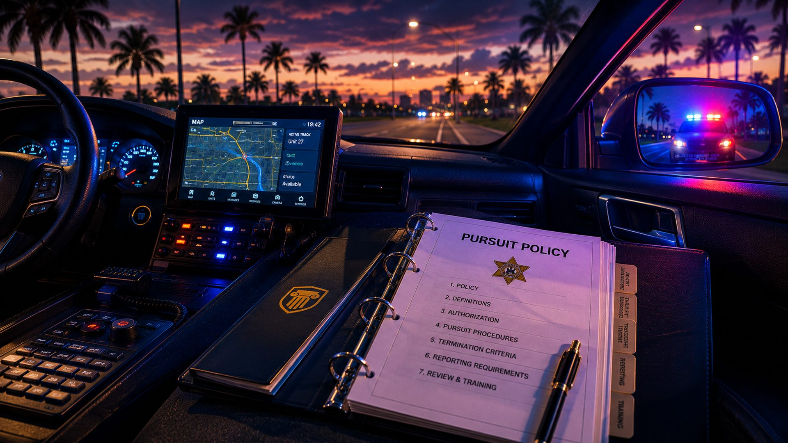

Fleeing or Eluding, Part 2: When the Chase Itself Breaks the Rules

In Part 1, we covered what the State must prove for a fleeing-or-eluding charge under F.S. 316.1935 -- and how the case turns on knowledge and willfulness. But proving the statute is only half the story. The other half is the chase itself: whether it ever should have happened, and whether the officer followed the agency's own rulebook and training once it did.
That matters because the most serious fleeing charges -- the second- and first-degree felonies -- depend on "high speed" and "wanton disregard for safety." When a pursuit turns dangerous, the question becomes whose choices created the danger. And the answer often lives in a policy manual.
The Officer Has a Rulebook, Too
The Orange County Sheriff's Office governs pursuits through General Order 8.1.7, "Vehicle Apprehension / Pursuit." The most important thing it says: a deputy may engage in a vehicle pursuit only on reasonable suspicion that the fleeing suspect committed, attempted, or has a warrant for a listed violent, forcible felony -- murder, manslaughter, robbery, burglary, arson, aggravated stalking, aircraft piracy, "and any other felony which involves the use or threat of physical force or violence against any individual."
Read That Again
Fleeing, by itself, is not on the list. Neither is a traffic offense, a suspended license, or a minor misdemeanor. Under the policy, those don't authorize a chase at all -- a watch commander (lieutenant or above) has to authorize anything outside the violent-felony threshold, and only when the suspect's conduct presents "an immediate and life threatening danger." If the reason for the chase doesn't clear that bar, the pursuit may have violated policy from the first second.
Safety Is "the Foremost Concern"
GO 8.1.7 makes public safety the controlling value: deputies "must balance the need to stop a suspect against the potential threat to themselves and the public." And that judgment isn't a one-time decision at the start -- the policy requires deputies, supervisors, and watch commanders to "closely monitor the progress of each pursuit," continually weighing the need to apprehend against the danger. When the call is made to stop, dispatch sounds an alert tone and announces, "All units discontinue the pursuit." There is even an affirmative duty to report another deputy who keeps going.
It Lines Up With What the Academy Teaches
None of this is unique to one agency. Florida's law enforcement academy curriculum -- the High Liability (vehicle operations) training every recruit completes -- teaches the same idea as a formal "balancing test": what "officers must consider when deciding to engage in, continue, or terminate a pursuit." The training is blunt that an officer who begins a pursuit "ha[s] no duty to continue it," and that breaking off a chase is often the safer, legally sounder choice. That standard is grounded in court decisions -- including the U.S. Supreme Court's pursuit ruling in Scott v. Harris -- recognizing an officer's duty to weigh the public's safety, not just the goal of catching the driver.
They Don't Have to Chase Anymore
Modern policy assumes officers have better options than a high-speed chase, and GO 8.1.7 spells them out. It defines Electronic Tracking -- equipment "that allows [a vehicle] to be tracked from a remote location… by the use of GPS satellites or some other combination" -- and it lists "alternative means of apprehension" as a factor deputies must weigh before and during a pursuit. The policy also catalogs trained, supervised tools meant to end a chase safely instead of prolonging it:
- Tire deflation devices placed in the vehicle's path
- The Grappler bumper-tethering device
- Tactical Park -- coordinated positioning at roughly 10 mph or less
- Stationary roadblock / channelization to limit the path of travel
- PIT and the multi-unit diversionary traffic stop
The clearest example is GPS "tag-and-track" technology such as StarChase: a compressed-air launcher mounted on the patrol vehicle fires an adhesive GPS tag onto a fleeing car, and the officer then backs off and follows the vehicle remotely instead of chasing it. Once a car is tagged, the core justification for a high-speed pursuit -- that the suspect will otherwise get away -- largely evaporates. The vehicle can be tracked and the driver located later, safely and on the agency's terms. That is exactly the kind of "alternative means of apprehension" GO 8.1.7 requires deputies to weigh.
If this sounds familiar, it should: in a recent local case, investigators relied on a covert GPS tracker on a vehicle rather than confronting the target directly. The same technology that builds those cases is exactly what pursuit policy points to as the safer alternative to a dangerous chase.
Why This Reshapes a Fleeing Case
When the danger of a pursuit is what elevates a fleeing charge to a second- or first-degree felony, the officer's own compliance with policy and training becomes central:
Where the Defense Lives
- Was the pursuit even authorized? If the underlying offense wasn't a violent forcible felony and no watch commander signed off, the chase itself may have been against policy.
- Who created the danger? "Wanton disregard for safety" can cut both ways. A chase escalated against the policy's balancing test and the academy's "terminate it" training puts the danger on the officer's choices.
- Why wasn't tracking used? When GPS, air support, tag devices, or a simple later-apprehension were available, prolonging a dangerous chase is harder to justify.
- Get the records. The pursuit policy, CAD and radio logs, supervisor decisions, and body- and dash-camera footage show whether the chase followed the rulebook -- or didn't.
Bottom Line
A fleeing-or-eluding case is two questions, not one. First, can the State prove the statute -- the knowledge and the willful refusal from Part 1? Second, did the pursuit honor the agency's own rules and the officer's training? Increasingly, those rules say don't chase -- track and apprehend later. When a pursuit ignores that, the resulting danger may say more about the officer's decisions than the driver's.
Charged With Fleeing or Eluding After a Pursuit?
The chase has a rulebook, and the records will show whether it was followed. We pull the pursuit policy, radio logs, and camera footage to test every element -- and every choice the officer made. Call now for a free, confidential consultation.
Free Consultation: 407-500-7000Related Articles
Fleeing or Eluding, Part 1: What the State Must Prove
The statute, the felony tiers, and the willful-knowledge element behind the charge.
When a Billing Dispute Becomes a Felony (FHP Champions Gate)
A local case built on a covert GPS vehicle tracker -- the same tech pursuit policy favors.
Your Rights During a Florida Traffic Stop
What you must do, what you can decline, and how the stop shapes the case.
The Florida Criminal Punishment Scoresheet, Explained
How a second- or first-degree fleeing felony translates into sentence exposure.